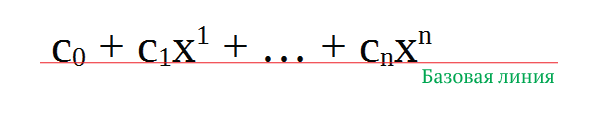

Семантика встроенного текста
В то время как абзацы и списки предназначены для идентификации целых блоков текста, иногда мы хотим наделить смыслом одно слово (или несколько слов) в тексте. Используйте семантику встроенного текста HTML, чтобы определить значение, структуру или стиль слова, строки или любого произвольного фрагмента текста.
Выделение важности смысла
<strong>
(от англ. strong — сильный) Выделяет важный текст, отображается жирным начертанием.
Важное предложение имеет большое значение для всей веб-страницы, указывает на что-то серьёзное или срочное.
Важное слово или словосочетание показывает, что оно имеет большее значение по сравнению с окружающим текстом.
Не используйте <strong> только для того, чтобы установить какой-нибудь текст жирным, скорее, чтобы придать ему большее значение.
<b>
(от англ. bold — жирный) Используется для привлечения внимания к тексту
При этом важность или значение текста не играют роли. Текст внутри <b> отображается жирным начертанием.
<b> не предназначен для оформления текста, с этой целью подойдёт элемент <span> с добавленными к нему стилями.
<em>
(от англ. emphasis — акцент) Предназначен для текста, имеющего особое значение или на который следует сделать акцент.
Текст внутри <em> отображается курсивным начертанием.
Не используйте <em> только для того, чтобы установить какой-нибудь текст курсивом, только чтобы сделать на нём акцент.
<i>
(от англ. italic — курсив) Используется для текста, который по разным причинам отличается от обычного текста.
Это может быть термин, иностранное слово, название и др. Текст внутри <i> отображается курсивным начертанием.
<i> не должен применяться для оформления текста курсивом, для этого есть стили.
Аббревиатуры, цитаты
<abbr>
(от англ. abbreviation — аббревиатура) Указывает, что последовательность символов является аббревиатурой.
С помощью атрибута title даётся расшифровка сокращения, что позволяет понимать аббревиатуру тем людям, которые с ней не знакомы. Кроме того, поисковые системы индексируют полнотекстовый вариант сокращения, это может использоваться для повышения рейтинга документа.
Браузеры обычно добавляют к тексту пунктирное подчёркивание, но могут и не выделять содержимое элемента.
Можно использовать для таких аббревиатур, как W3C или CD
<blockquote>
(от англ. block quote — блок с цитатой) Предназначен для выделения длинных цитат внутри документа.
Текст внутри <blockquote> отображается как выровненный блок с отступами слева и справа (по 40 пикселей), а также с отбивкой сверху и снизу.
Возможно, Ленин использовал фразу А. П. Чехова из произведения «Моя жизнь (рассказ провинциала)» гл. VI, первая публикация которого была в приложении к «Ниве» в 1896 г.
Учиться нам нужно, учиться и учиться, а с глубокими общественными течениями погодим: мы ещё не доросли до них и, по совести, ничего в них не понимаем.
<q>
(от англ. quotation — цитата, кавычки) Используется для выделения в тексте цитат.
Содержимое контейнера автоматически отображается в браузере в кавычках.
Станислав Лец утверждал: Чаще всего выход там, где был вход
.
Программные тексты
<pre>
(от англ. preformatted text — форматированный текст) Определяет блок предварительно форматированного текста.
Такой текст отображается обычно моноширинным шрифтом и со всеми пробелами между словами.
По умолчанию, любое количество пробелов идущих в коде подряд, на веб-странице показывается как один. Элемент <pre> позволяет обойти эту особенность и отображать текст, как требуется разработчику. По этой причине <pre> часто применяется для фрагментов программ, где важны пробелы.
<code>
(от англ. code — код) Предназначен для отображения одной или нескольких строк текста, который представляет собой программный код.
Сюда относятся имена переменных, ключевые слова, тексты функции и т. д.
Браузеры обычно отображают содержимое контейнера <code> как моноширинный текст уменьшенного размера.
В отличие от элемента <pre> дополнительные пробелы внутри контейнера <code> не учитываются, так же, как и переносы текста. Для разметки кода программы элементы <code> и <pre> комбинируют.
Верхний и нижний индексы
Индексом по отношению к тексту называется смещение символов относительно базовой линии вверх или вниз.

В зависимости от положения, индекс называется, соответственно, верхним или нижним.
Они активно применяются в математике, физике, химии и для обозначения единиц измерения. HTML предлагает два элемента для создания индекса: <sup> — верхний индекс и <sub>< — индекс нижний . Текст внутри этих элементов обозначается меньшим размером, чем обычный текст, и смещается вверх или вниз.
<sub>
(от англ. subscript — нижний индекс) Отображает шрифт в виде нижнего индекса.
Текст при этом располагается ниже базовой линии остальных символов строки и уменьшенного размера.
Формула серной кислоты: H2SO4
<sup>
(от англ. superscript — верхний индекс) Отображает шрифт в виде верхнего индекса.
Шрифт при этом отображается выше базовой линии текста и уменьшенного размера.
Великая теорема Ферма
X n + Y n = Z n
где n - целое число > 2
Переносы в тексте
HTML произвольно переносит текст на новую строку в тех местах, где встречается пробел или дефис.
Но по правилам русского языка в некоторых случаях переносы запрещены. Так, нельзя разрывать переносом сокращения, вроде «т. д.», отрывать инициалы от фамилии, от значения единицы измерения (5 км) и обозначение года (1917 г.) и др.
Чтобы запретить перенос в определённых местах вместо пробела применяется неразрывный пробел , как показано в примере:
Возврат к стереотипам аннигилирует глубокий полифонический роман, именно об этом говорил Б. В. Томашевский в своей работе 1925 года.
И, наоборот, там, где в длинных словах желательно поставить перенос строки, вы можете использовать элемент <wbr> или спецсимвол ­.
И тот и другой вариант работает одинаково — слово отображается целиком, когда оно помещается в строке, а если не помещается, то в указанных местах делается перенос (пример 9). Есть только небольшая разница в отображении — ­ добавляет при переносе дефис, а <wbr> нет.
<wbr>
(от англ. word break — перенос слов)
Указывает браузеру место, где допускается делать перенос строки в тексте, если этого требует ширина родительского элемента.
Самое длинное слово из химии
метоксихлор
­
Название орудия — сорокапятимиллиметровая противотанковая пушка образца 1942 года (М-42).